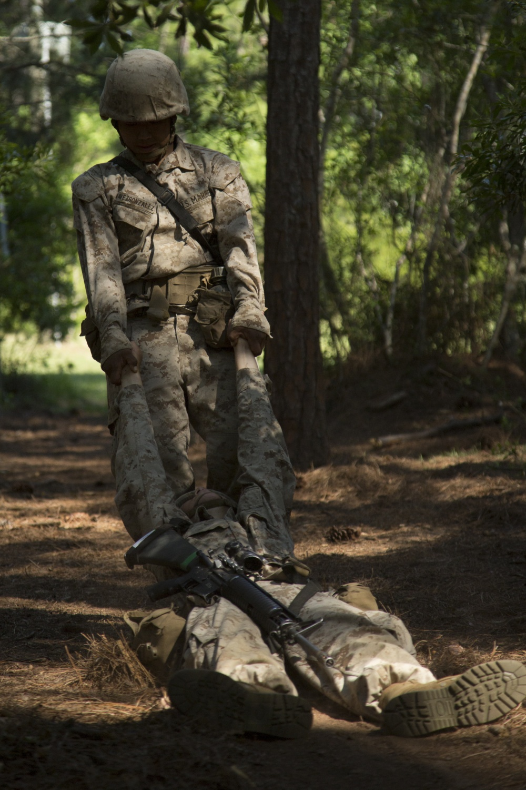
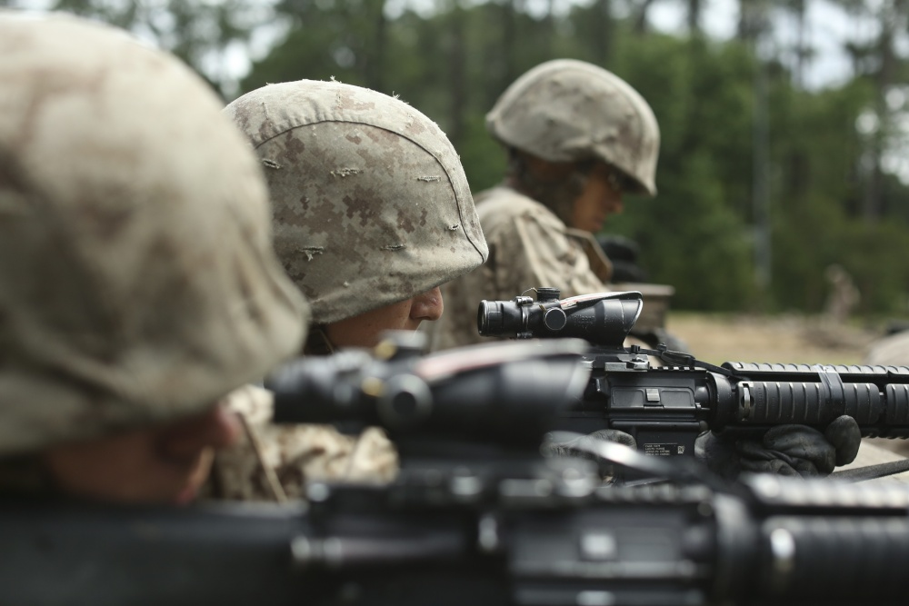
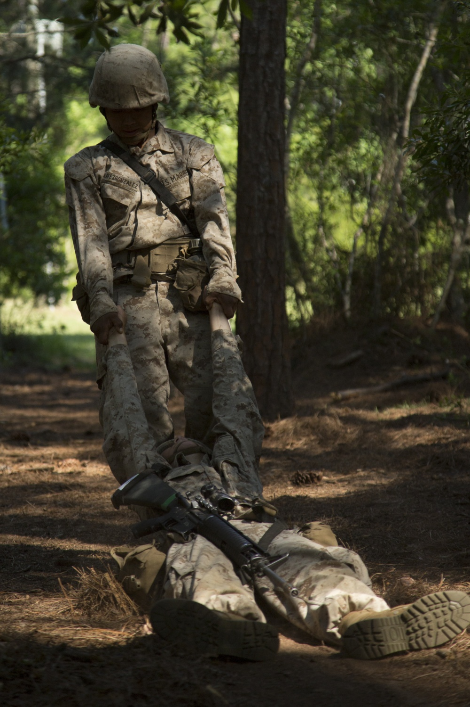
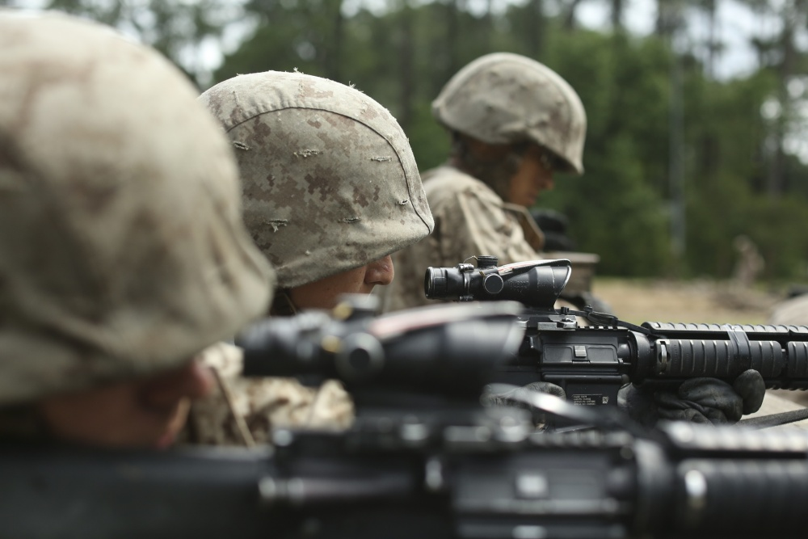

- Yamil Casarreal
- Home
- Experience
- Photography and Videography

Hello, I’m Yamil.
My home is Miami, Florida.
My home is Miami, Florida.
I’m currently active duty in the United States Marine Corps as a Combat Photographer. I aspire to be a full stack developer and gaming programmer. I'm currently doing treehouse's techdegree to prepare me for when I exit the military.
")
") 



My goal is to work any company that needs a web developer or game programmer.
I want to increase my knowledge and proficieny in:
I've always aspired to be a programmer, despite the busy schedule the military has put me on.